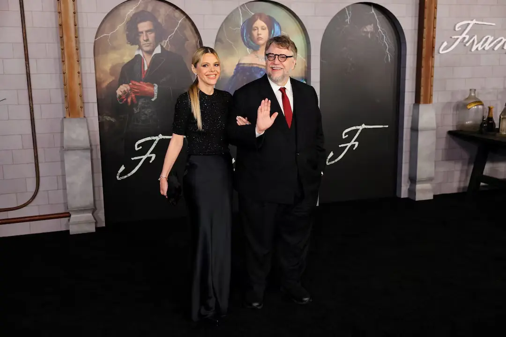

An English museum has opened a major exhibition celebrating the life and work of Mary Shelley, offering visitors a deeper look into the origins and lasting influence of her groundbreaking Gothic novel Frankenstein. The exhibition brings together rare manuscripts, personal letters, early editions, and cultural artifacts to trace how a story written more than two centuries ago continues to shape literature, film, science, and ethical debates today.
The exhibition arrives at a moment of renewed interest in Shelley�s work, as modern audiences revisit questions raised by Frankenstein about scientific responsibility, ambition, and the boundaries of human knowledge. Curators say the goal is not only to highlight the novel�s enduring popularity, but also to reframe Shelley as a serious intellectual figure whose ideas remain strikingly relevant in an age of artificial intelligence, genetic engineering, and rapid technological change.
A Young Author Behind a Timeless Story
Born in 1797, Mary Shelley wrote Frankenstein while still in her teens, a fact that continues to astonish scholars and readers alike. The exhibition places particular emphasis on her early life, showcasing materials that reveal the intellectual environment in which she was raised. As the daughter of philosopher William Godwin and feminist writer Mary Wollstonecraft, Shelley grew up surrounded by radical ideas about politics, science, and human potential.

Original handwritten notes and early drafts displayed in the gallery show how Shelley refined her story over time, transforming a ghost tale conceived during a stormy summer in Switzerland into a novel that would redefine Gothic fiction. Visitors can see how themes of isolation, creation, and moral responsibility evolved through revisions, offering insight into Shelley�s creative process and literary ambition.
Reclaiming Mary Shelley�s Voice
For decades, Shelley�s legacy was often overshadowed by her famous husband, poet Percy Bysshe Shelley, and by the many adaptations of Frankenstein that diverged from her original vision. Museum curators say the exhibition seeks to correct that imbalance by placing Mary Shelley firmly at the center of her own story.
Interactive displays and interpretive panels emphasize that Frankenstein was never simply a horror story. Instead, it was a philosophical novel deeply engaged with the scientific debates of the early 19th century, including experiments with electricity, anatomy, and the nature of life itself. By foregrounding Shelley�s authorship and intellectual independence, the exhibition challenges outdated assumptions about women writers of her era.
From Page to Popular Culture
Another major section of the exhibition examines how Frankenstein evolved from a novel into a global cultural phenomenon. Early theatrical posters, film stills, and illustrated editions demonstrate how the image of the �monster� changed over time, often straying far from Shelley�s original depiction of a sensitive, articulate being rejected by society.
Curators note that these adaptations helped cement Frankenstein in popular imagination but also simplified its themes. By juxtaposing original text excerpts with later reinterpretations, the exhibition encourages visitors to reconsider what Shelley actually wrote � and how her ideas have been reshaped to reflect changing social fears, from industrialization to nuclear power and modern biotechnology.
A Novel for the Age of Technology
The museum exhibition draws clear parallels between Shelley�s work and contemporary debates about scientific innovation. Frankenstein is frequently cited in discussions about ethical limits, and curators argue that the novel�s questions are more urgent than ever. As society grapples with artificial intelligence, gene editing, and automation, Shelley�s warning about unchecked ambition resonates strongly with modern audiences.
Educational programming linked to the exhibition includes panel discussions, lectures, and workshops that explore how Frankenstein intersects with current scientific and moral challenges. Organizers say the aim is to spark conversation rather than provide definitive answers, staying true to Shelley�s original intent of provoking reflection and debate.
Enduring Legacy of a Gothic Masterpiece
More than 200 years after its publication, Frankenstein remains one of the most widely read and studied novels in the English language. The exhibition highlights how Shelley�s work laid the foundations for both science fiction and modern horror, influencing generations of writers, filmmakers, and thinkers.
Museum officials say the strong public interest in the exhibition underscores Shelley�s continued relevance. By presenting her life and work in historical context while connecting it to present-day concerns, the museum hopes to introduce new audiences to the original power of Frankenstein � not just as a Gothic tale, but as a profound exploration of humanity itself.